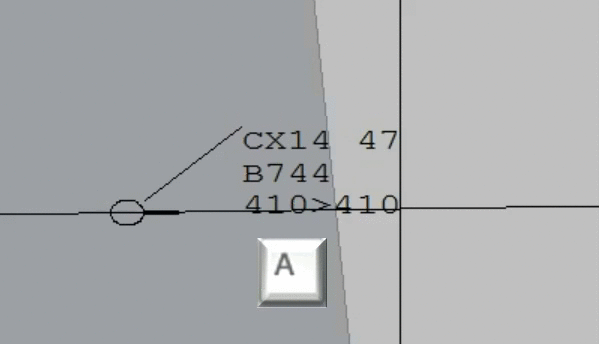
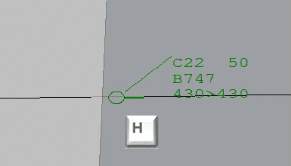
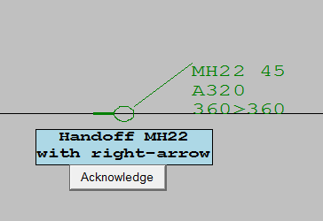
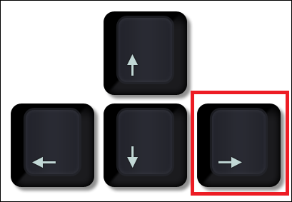

Accepting and Handing Off
1. Accepting Aircraft
Aircraft outside your control are black. When they enter within 5 nautical miles of your sector boundary
they will flash orange to be accepted under your control. You accept aircraft into your sector by clicking the
middle of the aircraft circle and then pushing the
 key within 20 seconds. Aircraft will turn green when accepted.
key within 20 seconds. Aircraft will turn green when accepted.

2. Handing off Aircraft
When aircraft exit more than 1 nautical mile from your sector
they will flash blue to be handed off. You handoff aircraft from your sector by clicking the
middle of the aircraft circle and then pushing the
 key within 15 seconds. Aircraft will turn white when handed off.
key within 15 seconds. Aircraft will turn white when handed off.

3. Handoff Deviations
Sometimes you will be asked to remember to handoff an aircraft with one of the directional arrows instead of H. You will recieve this message next to the relevant aircraft ahead of the time, if you are required to do this. Remember to push the correct arrow key. See example image below for further reference.
It is very important that you push the "Acknowledge" button when one of these messages appear. You have 10 seconds to Acknowledge a message.
